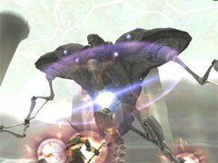
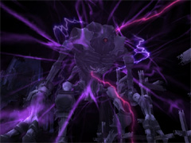
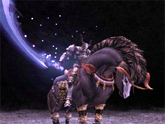
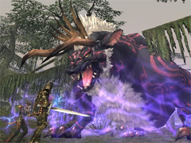

Event-related
- New Limbus areas have been added to Temenos and Apollyon.
-
- 
- Entrance: Trade a metal chip to the Matter Diffusion Module target.
- Entrance: Trade a niveous chip to the Matter Diffusion Module target.
-
- 
- Entrance: Trade a metal chip to the Swirling Vortex target.
- *The original and new (II) versions of the following Limbus battlefields occupy the same area. If one battlefield is already reserved by a party, a different party may not reserve either.
-
- Can now store a maximum of 9,999 ancient beastcoins.
- Can now return ancient beastcoins that you have stored.
- Now offers the following additional items in exchange for ancient beastcoins:
- *These items will only appear to players possessing the corresponding Shining fragment and Glossy fragment key items. (The key items will disappear upon completing the exchange.)
- Time required to repair artifact/relic equipment has been changed from until the next conquest tally to one Vana'diel day.
- Will now offer ancient beastcoins in exchange for the following unused chips:
- New pieces of equipment will be obtainable from the NPC Wilhelm in Mhaura.
-
- 
- Entry Procedure: Trade a Smouldering Lamp to the Entry Gate after having acquired the designation "Elite Einherjar" and the valkyrie feather key items from each of the three Wings.
- *As before, valkyrie feathers will disappear upon successful entry.
- *The Odin's Chamber and Odin's Chamber II battles occupy the same area. If one battlefield is already reserved by a party, a different party may not reserve either.
- The procedure for entering Odin's Chamber has been revised.
- Trade a Smouldering Lamp to the Entry Gate while in possession of the valkyrie feather key items from each of the three Wings.
- *As before, valkyrie feathers will disappear upon successful entry.
- The "Mark of the Einherjar" key item may now be obtained by examining the ??? target in the Hazhalm Testing Grounds, provided the player either:
- Possesses at least one Valkyrie feather from each of the three wings, or
- Has acquired the "Elite Einherjar" title
- The following items may now be purchased from the Nashmau NPC Kilusha in exchange for ampoules of therion ichor:
- *These items will only appear to players possessing the Mark of the Einherjar key item.
- The above items may be traded to the "???" target in the Hazhalm Testing Grounds to obtain one of three Valkyrie feathers (of the player's choice) corresponding to each item:
- 
- The following enemy weakness adjustments, formerly exclusive to the final chapter of Voidwatch, will apply to all jurisdictions.
- Triggering weaknesses will lower enemies- attack and magic attack power.
- Abilities and spells learned via merit points will not trigger enemy weaknesses.
- The thief ability Bully will trigger enemy weaknesses.
- All pet special attacks will be able to strike enemy weaknesses.
- The ranger ability Bounty Shot will not trigger enemy weaknesses.
- Wyvern breath attacks will not trigger enemy weaknesses.
- Only a single blood pact for each avatar will trigger enemy weaknesses:
- All automation abilities and special attacks will trigger enemy weaknesses.
- The scholar ability Modus Veritas will not trigger enemy weaknesses.
- *The spells and abilities that will no longer trigger enemy weaknesses will be replaced with other ones usable by the same job so that each job's chance of triggering weaknesses remains relatively unchanged.
- The "Void cluster," a new key item that may be used to weaken Voidwalkers, has been added.
- Obtaining and Using Void Clusters
- Purchase a "Phase Displacer" item from the NPC Ardrick (Jugner Forest, I-8) for 100,000 gil.
- Up to five phase displacers may be purchased at one time. After completing one purchase, no more displacers may be purchased until the next Conquest tally.
- Phase displacers are stackable (up to 99) and may not be traded, sent via the delivery service, or sold in bazaars and auction houses.
- Convert phase displacers to void clusters by trading them to a Planar Rift. Up to five Void Clusters may be carried at one time.
- Upon initiating a Voidwatch operation, players will be prompted as to how many Void Clusters they want to use. Select the desired amount and begin the battle.
- The following equipment items, hereafter to be known as "Pulse Panoplia"-a reference to their luminescent appearance-may now be converted to new items called Pulse Cells.
- Anhur Robe / Fazheluo Radiant Mail / Mextli Harness / Mekira Meikogai / Toci's Harness / Heka's Kalasiris /Asteria / Borealis / Coruscanti / Ephemeron / Murasamemaru / Delphinius / Aytanri
- Pulse Cell Conversion
- When obtaining a pulse weapon or piece of armor from a Riftworn Pyxis, select "Obtain as pulse cell."
- Items obtainable as pulse cells will be marked with a star.
- Pulse cells are stackable (up to 12), deliverable, and may be traded or sold at bazaars and the auction house.
- Trade five of any one variety of pulse cell to the NPC Ardrick (Jugner Forest, I-8) to obtain the corresponding piece of pulse equipment.
- *In order to have equipment reconstructed, players must possess the designation for defeating the Voidwalker that drops the corresponding item.
- [dev1118] Legion Adjustments
- The Legion Libretto, which allows players to choose what fanfare plays during battle, has been added to battlefield antechambers.
- *Only the group leader who originally traded the Legion Pass will be able to change the music.
- The key items required to participate in Legion battlefields and their prices have been adjusted as follows:
- *Legion tome pages already in the player's possession at the time of the update will be automatically converted to maximus pages.
- Players wishing to participate in reduced-difficulty 18-player battlefields will be required to purchase minimus pages anew.
- [dev1120] Fellow Adjustments
- Adventuring fellows will now be able to equip the following items:
- If the player equips the above equipment, adventuring fellows will also appear wearing the same items.
- *1 Dream Robe +1 / Dream Boots +1 / Dream Pants +1 / Dream Pants +1 must be equipped simultaneously.
- *2 Both body and leg armor pieces must be equipped simultaneously.
- A new method for obtaining the required quest items has been added.
- *Items will only be obtainable this way if the quest is in progress and the player does not already possess the item in question.
- [dev1121] A new method for opening the Banishing Gates in Garlaige Citadel has been added.
- Players may open the gates alone by obtaining the "pouch of weighted stones" key item from the ??? target in Garlaige Citadel (G-8) and examining each of the three gates.
- [dev1121] The Brass Door on the top floor of Castle Oztroja (H-7) will remain open for a longer period of time.
- *This time extension will not apply if opened from the inside using the handle.
Battle-related
- The following job adjustments and refinements have been implemented:
-
- The following Tier V spells have been unlocked:
- The method by which the ranger ability Decoy Shot determines which character will accrue enmity from the ranger's attacks has been refined.
- The following items are now dropped by more enemies, and the rate at which they drop has been increased:
Item-related
- New items have been introduced.
- New synthesis recipes have been introduced.
- [dev1124] New synthesis recipes utilizing the following key items have been added:
- The sell-back price of Holy Water has been adjusted.
- [dev1123] The items below are now storable via the Moogle Porter service:
- A new Moogle Storage Slip has been added.
- The list of undeliverable exclusive items has been updated.
System-related
- The Other Maps option has been added to the Map section of the main menu, allowing players to view maps and set markers for areas other than the one which they are currently exploring.
- *Maps not owned by the player cannot be displayed.
- The new text command /displayhead has been added and allows players to hide or display their headgear.
- USAGE: /displayhead [subcommand]
- Toggles display of headgear on/off.
- This setting will also affect how your character appears to other players.
- Pieces of headgear that cover other body parts in addition to the head will not be affected.
- on Display headgear.
- off Do not display headgear.
- Toggles on and off when no subcommand is specified.
- The waiting period between synthesis attempts has been reduced.
[Windows Version Only]
- The number of directions in which players may move while holding the scroll wheel and moving the mouse in the Compact 2 keyboard configuration has been increased from eight to sixteen.
Resolved Issues
- The following issues have been corrected:
- The issue with Trial of the Magians wherein enemies defeated without meeting the trial requirements would still count toward completion of Trial 302.
- The issue wherein the counterattacks of the Dynamis - Xarcabard enemies Satellite Knuckles and Animated Knuckles would not appear in the log.
- The issue wherein visual effects for the Abyssea - Grauberg enemy Maere's spells would occasionally display improperly.
- The issue wherein the log would mistakenly display that players were inflicted with the additional effect of poison even when protected by the job ability Divine Caress.
- The issue wherein the visual effects for certain songs would appear in improper locations.
- The issue wherein the ranger ability Decoy Shot could transfer enmity to KO'd PCs.
- The issue with the Auction House wherein ammunition-category items would not display in the proper order when sorted by attack speed.
- The issue wherein incorrect visual effects would display when using scrolls of Endark.
- The issue wherein it was possible to synthesize multiple Gargouille Arrowheads and Peapuk Fletchings without their corresponding key items.
- The issue with fishing wherein it was possible to catch Tiger Sharks without possessing the key item Anglers' Almanac.
- The issue wherein the graphics for certain status icons would not display properly.
- The issue wherein closing a map while the main menu was open would also result in exiting the main menu.
- The issue wherein the /translate command would not translate the following words:
Known Issues
- The following Ex items are not yet deliverable to characters registered under the same account as the sending character:
|

{kind=link}
{kind=link}
{kind=link}
{kind=link}